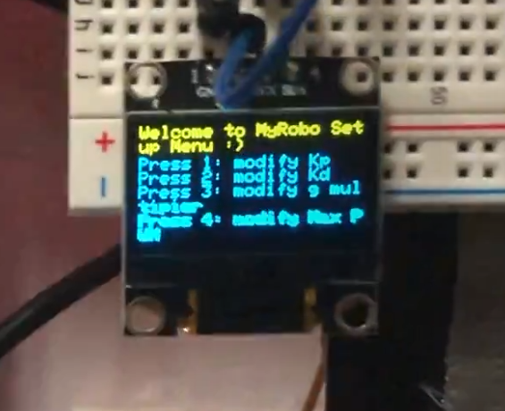
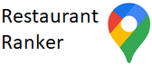

Space and Rocketry Simulation (Jan 2022 - Present)
Links
Knowledge and Skills Utilitzed
All my thoughts, demos, and source code can be found in the links at the top of this page!
Summary
Figure. Demonstration of simple spacecraft orbiting a scaled earth with live orbital trajectory plotting.
I am developing a space and rocketry simulation in the unity game engine with the C# programming language. The goal is to simulate a realistic physics environment where a user can control a rocket from launch on a planetary surface, go into orbits and land on other stellar bodies. A parametric rocket model for aero, thermo and orbital dynamics will be developed. This is an exciting project for me because I am able to apply a large extent of my physics, math, and computer science knowledge - acquired from my studies at university and exploring my interests during my spare time. In addition, I am self-learning from rocket engineering literature. As I work on this project, I will document my progress in a log book, and my source code (and any other libraries that I use) can be found on GitHub.
My interests in space, physics, and simulations have led me to this exciting project. Anyone who knows me well enough would tell you that I have an overwhelming fascination in all things space related. I am determined to make an impact on the space exploration industry. I hope to see humans form long term outposts and colonies on the moon and mars in my lifetime.
Last summer I completed a research project on the thermodynamics of a liquid propellant rocket engine. I derived the equations for combustion and modelled the conditions and resultant thrust with Python. I am applying this work - along with aerodynamic equations - in building the parametric rocket model for the simulation.
Figure. Demonstration of my 3 DOF N Body simulation for point mass planets where each body starts at a position with an initial velocity. This is a planetary system I created where a moon is orbiting a planet that is orbiting the sun. Note that the simulation is not to scale with the physical world!
Figure. Rocket controller and rigid body physics engine I implemented.
Figure. Live orbital trajcetories plotting of a celestial bodies.
Self Driving Car (Jan 2022 - Present)
Links
Skills
Summary
As part of an engineering project course, I programmed and trained a machine learning and computer vison based self driving car. The car is simulated in ROS and Gazebo. I experimented with and implemented neural networks, computer vision, and control algorithms to build this program. As I complete this project, I will update below with the summaries of several experiments as well as the final result of the project.
Path Following Algorithm with OpenCV
I created an algorithm in Python, using the OpenCV and Numpy libraries, that takes a video input of a path and makes a green ball follow the path. It works by detecting the pixel coordinates in each frame based on RGB color values and averaging the coordinates to approximate the center of the path which the ball is moved to.
Self Driving Robot Simulated with ROS and Gazebo
The goal of this task was to simulate a car in a ROS and Gazebo environment and make the robot drive and follow a path by implementing Gazebo camera ad skid steer plugins as well as computer vision and control code .
The control loop is as follows: 1. Receive camera subscriber feed from robot 2. Process video with OpenCV into useful data about robot location 3. Use data to generate move commands with PID control 4. Publish move commands to robot 5. Repeat
Below is a video demonstration of the working result.
Feature Tracking with SIFT and GUI with PyQt
In this task, I implemented feature tracking code utilizing OpenCV and the SIFT algorithm. If the feature match correlation is high, the program attempts to outline the feature with OpenCV homography. In addition, a simple GUI was created with PyQt that allows for the selection of a template image, capturing of live camera feed, and display of feature match and homography results on camera feed.
Demo:
Can Retrieval Robot (Summer 2021)
Links
Skills
Summary
I collaborated with three other students to design, assemble and test four robots that autonomously navigate on a tape path, collect cans, and drop them off in a silo. The robot chasse was constructed out of corrugated plastic and mounted onto two motors and a caster. Power was supplied by a 12V lithium ion battery and regulated to other components ; electronics were soldered onto protoboards. The firmware was written in C, C++ and Arduino framework and ran on a BluePill board with an STM32 microprocessor. Navigation was accomplished by two infrared sensors and a PID control algorithm. A sonar and a series of servo motors with corrugated plastic arms were used to detect, pickup, and drop-off any cans that the robot detected. Our robots tied for first place in a competition with 15 other teams in which can arrangements were randomized and the robots had to complete an 8ft x 8ft circuit in 1 minute.
Figure. Demo ft. my team and I. I'm in the red shirt!
My Contribution
Electrical design; designed and assembled h-bridge motor drivers, sensor, processing, and power management electrical circuits
Tested circuits with oscilloscope, optimized circuit flaws, and drafted final designs
Firmware programming and debugging for STM32 MCU with C++ and Arduino framework; wrote code for state machine, start-up sequence, navigation, motor PWM control, sensor communications, can disposal, and telemetry GUI
Improved PID motor control algorithm for navigation by implementing smooth error mapping from IR tape sensor readings
Developed simulation in python to predict robot performance
Implemented wireless communication system to efficiently tune robot parameters
Project Overview
This project was done in an engineering project course during the summer of 2021 - in the midst of the pandemic. The fact that the course was online limited the materials and tools at our disposal, and teamwork. Due to some students residing outside of the country, each student was required to build a robot which resulted in my team designing one robot and replicating it four times.
The assessment of the course included a design presentation, a timed trial, and the final competition. Following a "Mars Retrieval" theme in light of the recent rover launch, the competition required the robot to descend into an arena with a sky crane and pickup a samples (cans) and deposit them in a return rocket (card-board silo). The time-limit was 1 minute and the can arrangement was randomized. My team opted to line the arena with a tape path for the robot to follow that maximized the robot's chance to encounter a can.
Figure. Competition surface.
Planning and Simulation
During the planning phase, in order to help quantify design decisions, I programmed python code that simulates, in 2D coordinates, several robot traversal paths as well as the randomized can arrangements. Through this simulation, we acquired a rough estimate of the time it would take to traverse certain paths, and which traversal technique would be more effective. We can to the conclusion that a robot following a pre-determined path, and detecting cans in local proximity would be a better option than long ranged detection. We called this the 'sweep' method.
Figure. Snippet of python simulation output in Jupyter notebook.
Mechanical Design
The mechanical design of the robot consisted of a chasse capable of storing 6 cans horizontally, the cans are stored until it is time to drop them off. The cans are detected with a sonar, collected with an actuated arm, and are lifted to the storage location through another arm; the arms are rotated with servo motors. There are 2 rows of can storage, storing 3 cans each, and directed by an actuated gate at the top.
Figure. Robot CAD, created in OnShape by a team member.
Electrical Design
The electronic components of the robot consisted of sensory electronics, motors, a small telemetry display, a BluePill board with an STM32 MCU, and 12 and 9 volt lithium ion batteries. The final design of the robot consisted of three separate circuits, designed by me and soldered with the help of teammates. The main circuit contained the microprocessor and all the sensor and motor IO. The h-bridge motor circuits which provided robust control of both speed and direction of the geared motors was another circuit. The final board contained two isolated circuits powering and relaying signals for the servo motor and tape sensors.
Technical issues encountered included interference from the motors, which was solved by adding optocouplers to electrically separate the signal output of the microcontroller from the h-bridge. The h-bridge was also surrounded by a grounded metal foil box once all the systems were assembled. The sensory signals were connected by multi-core shielded wiring as they were very susceptible to noise. I frequently encountered electrical components or circuits that did not function - frequent testing with a multimeter and oscilloscope saved a lot of time when constructing the circuit.
Figure . Completed circuits wired and mounted on robot base (without top chasse). H-bridge (left), processing (middle), servo and tape sensor (right). Figure. H-Bridge (top) and power regulator (bottom) circuit schematics.
Figure. Early robot prototypes, used to test the BluePill, motors, h-bridge circuits, and the navigation algoritms.
Software Design
My contributions included programming the firmware for the robot’s STM32 microcontroller in C++ and Arduino framework. I wrote the code for a start-up sequence of 7 subsystems and the main state machine for the robot’s navigation and can disposal system. Other firmware includes code to drive motors, servo-motor, read from sonars and tape sensors, and run an on-board display.
One issue my team encountered was constantly reuploading code to tune the parameters of a PID control navigation algorithm. To solve this issue, I implemented code for wireless communications that used an IR remote and receiver. In addition, I designed a GUI settings system to work on small on-board display. Because of this, we were able to save time by tuning robot parameters without the need to reupload code.
 Figure. Settings menu for parameter tuning with wireless remote.
Figure. Testing IR remote and receiver firmware on an early robot prototype.
Another technical challenge my team encountered was lack of stability in our PID control algorithm. This algorithm processed tape (IR reflectance) sensor readings into motor direction and PWM parameters to keep the robot navigating on a tape path. I was able to drastically increase the stability of the robot by implementing an improved error mapping function. This method took advantage of analog readings and the range of view of the tape sensors which were able to give useful error variation data while the robot was still on the path. By adjusting the resolution of the algorithm, the robot PID control could have smaller and smoother error steps, leading to increased stability at the cost of reduced speed.
Figure. Testing robot tape following and can disposal code.
Figure. Robot completing competition course. It reached an internal emergency timer limit and decided to drop off all cans to gain partial points.
VHDL Projects
Skills
Summary
A collection of VHDL projects I've complete for engineering courses and personal projects. I upload my VHDL code to a DE0-CV FPGA for demonstration.
8-Bit Adder and Subractor
2 Digit Integer Adder and Subtractor
12 Hour Clock
UBC Mars Colony (Sep 2019 - Mar 2021)
Links
Skills
What is UBC Mars Colony?
UBC Mars Colony is a student engineering design team with goal of researching and prototyping technology that can assist habitation and research outposts on mars.
My Involvement
One of the team's projects is the Sabatier Fuel Reactor prototype which is a chemical reactor that can produce methane fuel from in-situ resources on mars. I was a mechanical subteam member of this reactor project - it was my first extracurricular involvement at UBC. My main contribution collaborating to design and assemble the mechanical frame of the reactor. This involved modelling components in SolidWorks, assembling the reactor, and designing subsystems. Components I've modelled include the reactor's reagent mixer, core, frame, steel piping and several other smaller components. I also helped assemble the reactor by bending steel pipes with an industrial pipe bender, and compression fitting these pipes with wrenches and ferrules. Additionally, I aided in the design and sourcing of components of a liquid output measuring system for the reactor. Other responsibilities included updating the team's BOM (bill of materials and parts) and organizing the team's SolidWorks PDM Vault (online storage drive for CAD files).
Figure. Reagent mixer assembly I created in SolidWorks; 3 reagents are fed into mass flow controller's to specify quantity and then mixed together.
Figure. Partially complete reactor assembly.
During the later stages of my involvement with UBC Mars Colony, I volunteered to do more electrical related work and learned how to run ANSYS simulations of critically heated reactor components. Electrical work included design of wiring systems, soldering of sensory circuit boards, and documenting any necessary information for wiring.
Item Economy Minecraft Plugin (Jan-Aug 2021)
Links
Skills
Summary
I programmed a plugin (server-side modification) for a Minecraft (videogame) server I hosted for friends. I decided to create it after my friends and I were attempting to simulate an in-game economy but ran into issues with keeping track of trades. The plugin is programmed in Java and allows for an economy where players can create bank accounts, trade with item-based physical currencies, and facilitate bank transfers. It works by accessing a server API called Paper which allows for manipulation of the players and game world. I later implemented AI bots that intelligently trade and tax players by monitoring the currency circulation as well as the player's shops. The shop's were facilitated by an external plugin name 'QuickShop' which I linked to through its API. A local .JSON file data base was developed since the server ran on my personal computer. I implemented algorithms to load and save all the required data to and from these files using Google's GSON library.
Demonstration
Plugin demonstration where a player checks his balance and proceeds to trade at a shop.
Analog to Digital Converter (Nov 2020)
Links
Skills
Summary
As a final project for an electrical design and analysis course, I created an analog to digital converter (ADC) circuit on a breadboard. The ADC converts an analog voltage into a binary signal representation of the voltage level.
Project Details
Figure 1. Image of the ADC assembled on a breadboard.
Figure 2. ADC digital timing diagram created from oscilloscope readings (an important diagnostic method).
Figure 3. 7 segment display reading of the binary signal from the converted 2.2 volts.
The constructed ADC can be broken down into several sub-circuits: TPG (trigger pulse generator), CPG (clock pulse generator), ATC (analog to time converter), counter, and control logic. These assembled , tested , and connected together to produce the ADC. The ATC integrates the analog input voltage and produces a binary output when the voltage ramp reaches a certain threshold. This integrated ramp is coupled with the binary pulse that produces a time window that is proportional to the input voltage. So when the integrator is triggered by the TPG, it begins to ramp up and when it reaches the threshold voltage, the comparator outputs a pulse. During this time period between the TPG and comparator pulse, the CPG is responsible sending pulses to the counter. The counter will then count these pulses which are proportional to the input voltage and produce a binary representation of the initial analog voltage which will be shown on a 7 segment display. The CPG produces continuous pulses until turned off by the control logic. The control logic is a flip flop with the TPG and ATC as inputs leading to another NAND, and the second input to that NAND is the CPG. As such, the control logic begins sending pulses to the counter when the TPG initiates until the ATC sends the end pulse. The CL also facilitates the TPG triggering the ATC. The TPG also controls the resets on the counters as to ensure that the data from previous readings does not interfere with the next reading. All of these sub circuits coming together produce an 8 bit representation of an analog voltage which is shown on the 7 segment display.
Digital and analog readings of the circuit were taken with an oscilloscope to ensure functionality at every stage of the assembly process. This data was then exported into a python jupyter notebook with the pandas library and the timing diagram plots were created with matplotlib.
Restaurant Ranker (Feb 2022)
What is it?
Restaurant Ranker is a Python algorithm, using Google Maps API, that ranks a query list of restaurants based on transit time, ratings, and other metrics. I made this because my friends and I were deciding which Fried Chicken restaurant was the best in the Vancouver area. Obviously, the only way to decide is to try them all and vote as a group. But in what order should we try them? Well this is what this algorithm is for.
For the future: I am considering programming a dynamic webpage with the ranker algorithm as backend for a better user interface - but that can't be done with GitHub Pages (maybe something like Heroku?).
Hello! I am an Engineering Physics student at the University of British Columbia. My interest is in the combination of mechatronics and software engineering and its applications in robotics and space exploration. When I'm not studying, you can find me building contraptions and mini robots at my electronics workstation, programming software and simulations, and playing (or making) videogames. During the summers I enjoy long walks, hikes and kayak trips through the wilderness of BC.
Work Experience
Firmware Engineer Co-op
Sierra Wireless |Richmond, BC | May 2022 - Dec 2022
Currently working co-op in the Module Firmware Integration team at Sierra Wireless Richmond. My work involves firmware development and testing, as well as hardware testing for their EM91 and EM92 5G Modules containing Qualcomm chipsets.
Hardware and Firmware Engineer Co-op
Brave Cooperative | Vancouver, BC | Jan 2021 - Apr 2021
I worked with a team of engineers to improve a radar based human detection system that detected and responded to over 100 overdoses.
Student Teams
UBC Open Robotics
Feb 2022 - Present
Role: Software and Firmware Engineer for robotic arm manipulation
An engineering student team building a general purpose domestic robot for the Robocup@Home competition.
UBC Mars Colony
Sep 2019 - Mar 2021
Role: Mechanical and Electrical Engineer in the chemical reactor team
An engineering student team with the goal of designing and assembling infrastructure that could allow for habitation and research on Mars.
Technical Projects
Space Simulation
Rocket flight simulation with realistic parametric model in Unity and Unreal Engine.
Can Retrieval Robot
An autonomous navigation, collection, and disposal robot.
Self Driving Car
Experimenting with computer vision, control theory, and neural networks to simulate a self driving vehicle.
VHDL Projects
A collection of small VHDL projects I've worked on , demonstrated on a DE0-CV FPGA board.

Restaurant Ranker
A small Python script, using Google Maps API, that ranks a query list of restaurants based on transit time, ratings, and other metrics.
Item Economy
A Minecraft plugin which allows players to create bank accounts and utilize item based currencies.


.jpg)